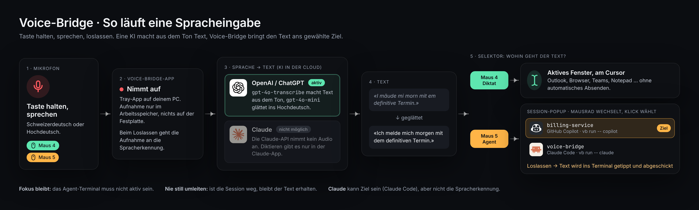
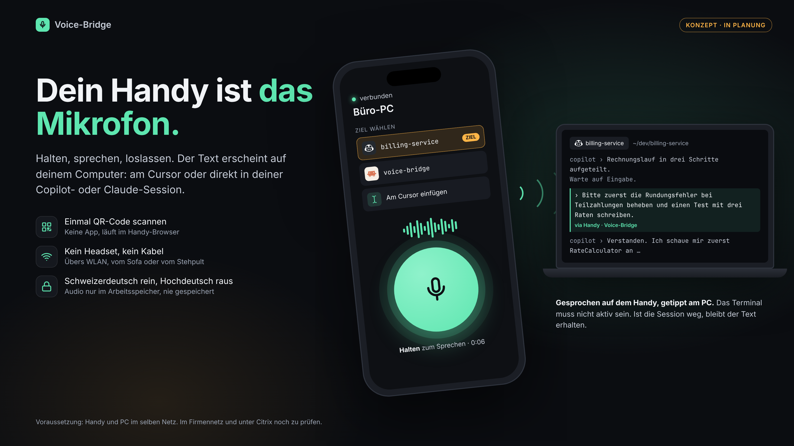

Taste halten, sprechen, loslassen. Schweizerdeutsch rein, Hochdeutsch raus: der Text erscheint am Cursor oder geht als Prompt direkt an deine Copilot- oder Claude-Session, ohne Fensterwechsel.
Eine KI (OpenAI) macht aus dem Ton Text, Voice-Bridge bringt den Text ans gewählte Ziel.

vb run -- claude.
Konzept, noch nicht umgesetzt.

Klickbare Entwürfe aller Abläufe.
Voraussetzung: Node.js 22 oder neuer.
stefaneicher-voice-bridge-<version>.tgz herunterladen.
npm install -g ./stefaneicher-voice-bridge-<version>.tgz voice-bridge
vb run -- copilot vb run -- claude
Maus 4 halten = Diktat am Cursor. Maus 5 halten = Prompt an die gewählte Session. Beide Tasten sind frei belegbar.